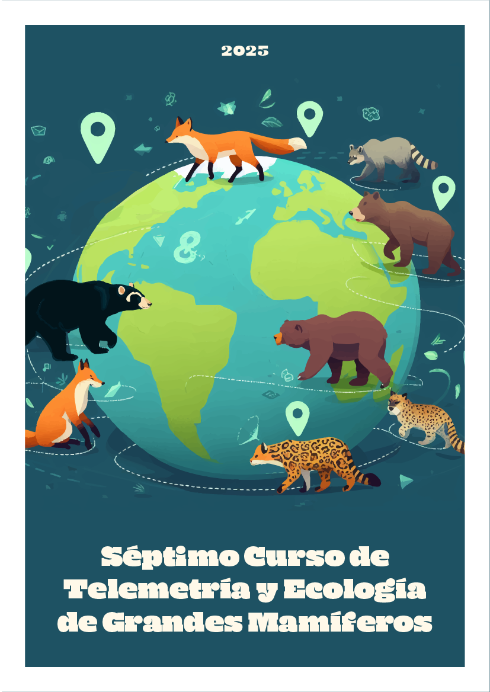

Introducción a la Telemetría de Grandes Mamíferos
Inicio

Esta es la sexta edición del curso de Introduccion a la Ecología y Telemetria de Grandes Mamiferos dictado por la Fundación Oso Andino. Puedes enterarte sobre el cronograma de actividades aquí.
Código de conducta
Queremos asegurarnos que tu expreiencia en el curso sea lo más agradable y fluida posible, y que puedas aprovechar al máximo el tiempo con nosotros.
Para poder llevar las actividades dentro del horario establecido y con normalidad, te pedimos:
- Actualización de Zoom: Asegúrate de tener la última versión de Zoom instalada. Esto te evitará problemas al ingresar a la sala.
- Nombre y país de origen: Cuando ingreses a la sesión, agrega tu nombre y apellido seguido de un guion y tu país de origen. Por ejemplo: Francisco Castellanos - Ecuador.
- Cámara apagada, micrófono en silencio: Para que nuestra conexión sea lo más estable posible, te sugerimos mantener tu cámara apagada y micrófono en silencio la mayor parte del tiempo. Esto nos ayudará a evitar distracciones y garantizar una experiencia de calidad para todos.
- ¡Participa!: El micrófono debe permanecer apagado para evitar interrupciones. Sin embargo, ya que buscamos que nuestras clases sean interactivas, el micrófono puede ser encendido en cualquier momento para realizar preguntas o comentarios que aporten con la discusión en la clase.
Por favor, recuerda que queremos mantener un ambiente respetuoso y amigable para todos. Cualquier comportamiento inapropiado o que perturbe la armonía del grupo podría resultar en la expulsión de la sala. Queremos que todos se sientan cómodos y seguros aquí, así que te pedimos que respetes estas normas para que podamos disfrutar de nuestro tiempo juntos al máximo.
Expositores
Estudiantes y profesionales brindarán charlas para mostrar el trabajo que llevan a cabo en sus países.
| Fecha | Expositor | Tema |
|---|---|---|
| Marzo 1, 2024 11:00 - 11:30 | Dra. Diorene Smith Cabellos - Panamá | Blindando de la extinción al perezoso pigmeo |
| Marzo 4, 2024 11:00 - 11:30 | Jorge Brito - Ecuador | Explorando la diversidad de pequeños mamíferos no voladores en Ecuador: Avances y descubrimientos |
| Marzo 5, 2024 10:30 - 11:00 | Angela Alviz - Colombia | Ocupación, patrones de actividad y abundancia relativa de la danta de tierras bajas (Tapirus terrestris) en Arauca, Colombia |
| Marzo 5, 2024 11:00 - 11:30 | Valentina López - Colombia | Patrones intersexuales de la conducta de marcaje por olor del oso andino (Tremarctos ornatus) en el corredor biológico Guácharos-Puracé |
| Marzo 7, 2024 10:30 - 11:00 | Elias Condori - Perú | Monitoreo de mamíferos con cámaras trampa en el valle de Koshñipata (zona de amortiguamiento del parque nacional del Manu) |
| Marzo 7, 2024 11:00 - 11:30 | Christian Loaiza - Ecuador | El zorro de Séchura en Ecuador situación actual y estado de conservación |
Agradecimientos
Esta edición del curso ha sido auspiciada por el Instituto Nacional de Biodiversidad.